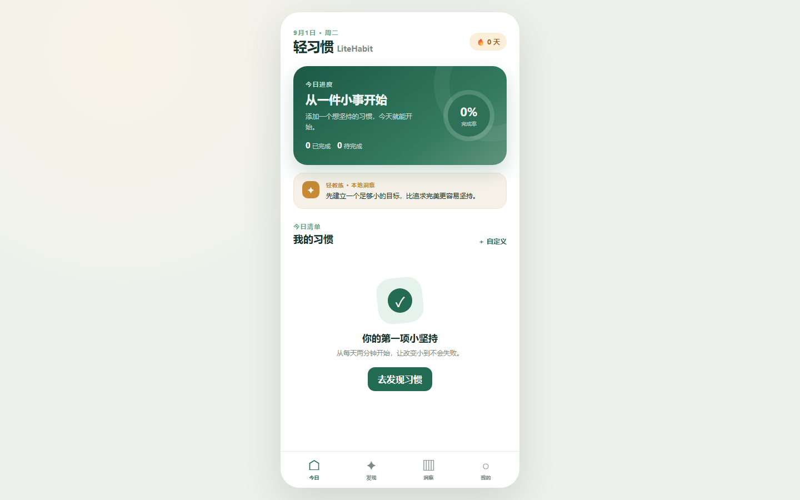
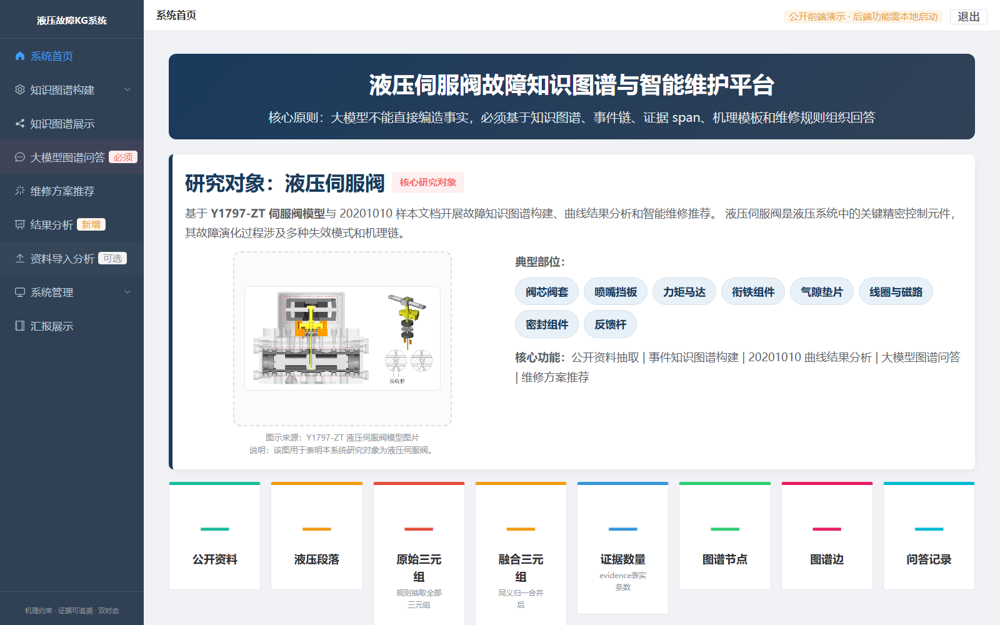
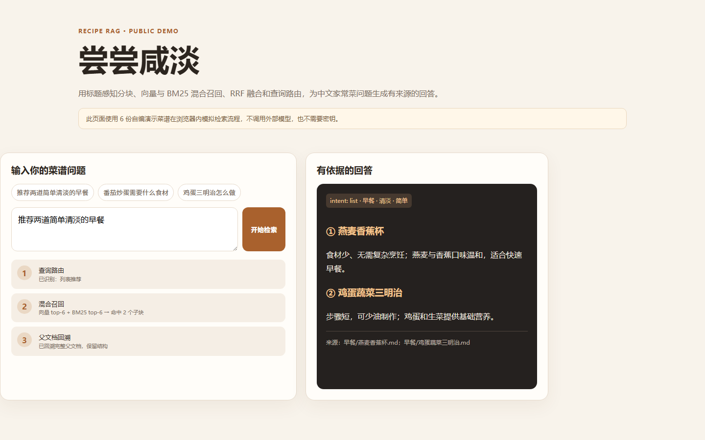
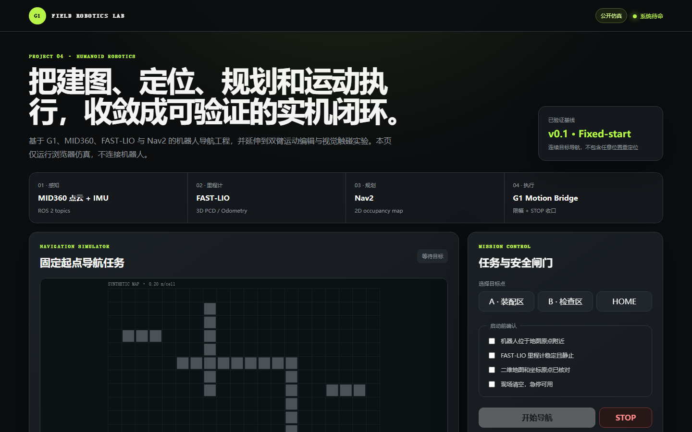

AI 产品能力
RAG、知识图谱、Prompt 路由、Agent 约束、模型输出分析、证据追溯与安全边界。
AI Product Portfolio · 2026
聚焦 AI 应用、工业知识产品与机器人系统。我从需求和用户任务出发，完成产品定义、PRD、交互原型、代码实现与验收边界。
Capabilities
不是罗列工具，而是说明如何把业务问题连接到产品方案、数据与工程交付。
RAG、知识图谱、Prompt 路由、Agent 约束、模型输出分析、证据追溯与安全边界。
需求拆解、用户路径、MVP 定义、PRD、交互原型、指标设计与验收标准。
HTML/CSS/JavaScript、Vue、FastAPI、Python、数据处理，以及 ROS 2 系统理解。
架构文档、数据边界、风险分层、fail-closed 策略和跨角色共同语言。
Selected Projects
每个案例都提供项目说明；能够公开运行的部分提供在线 Demo，并明确真实能力与演示边界。

PRODUCT DESIGN · WEB APP通过轻量启动、即时反馈与趋势可视化，降低用户开始和坚持习惯的心理成本。

AI · KNOWLEDGE GRAPH将分散资料转化为带证据、受机理约束的事件知识图谱，支持可信问答与维修辅助决策。

GENAI · RAG用结构感知分块、混合召回、RRF 排序和查询路由处理中文菜谱的组合意图。

ROBOTICS · SAFETY将 MID360、FAST-LIO、地图处理、Nav2 与 G1 执行组织成可停止、可验证的导航闭环。
Why I Fit
用可检查的项目产出回答“能否定义产品、理解技术、推动交付和控制风险”。
四个项目均从用户或业务问题出发，落实到功能、交互、PRD、代码和验收。
通过检索证据、机理规则、人工复核和 fail-closed 约束模型及系统承诺。
不仅输出方案，也完成 Web、Vue/FastAPI、Python RAG 与机器人交互仿真。
用架构、状态机、数据字段、风险边界与验收标准连接产品、研发和测试。
Contact
项目源码、产品文档与公开演示均整理在 GitHub 作品集仓库中，可从项目卡片直接进入。
访问 GitHub 主页 ↗